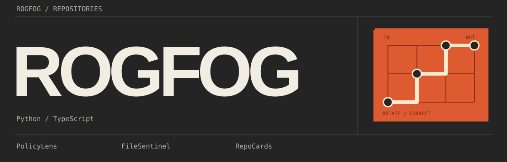

Build notes.
Source files, circuit rules and the steps for adapting the README.
01 / README and game page
The GitHub profile is a README. The game is a web page. A preview image connects the two, with a regular link that opens the playable page.
A README cannot run arbitrary JavaScript. GitHub sanitizes the rendered HTML, so a fully playable web game belongs on a separate page, such as GitHub Pages.
References: GitHub Markup and GitHub Pages.
assets/ Original vector artwork
signal.html Graphite profile
game/ Playable Signal Route
how-it-works.html This guide
profile/ README, images and profile CI
serve.mjs Local preview server
build-site.mjs Site files for GitHub Pages02 / The header SVG
The header uses large lettering and an orange patch panel. The selected Graphite palette is used throughout the workshop and game.

The artwork is SVG: editable paths, circles, rectangles and text. Open assets/header-signal.svg in a text editor. Change the ROGFOG text, the three project names and the short technology line. Keep the viewBox, title and desc; update their wording to describe the new graphic. It stays sharp when resized. Project descriptions and essential links remain real text outside the images.
Palette and motion
The header uses charcoal #232423, cream #f1ede3 and orange #de5a30. The moving dot uses SVG animation and follows reduced motion preferences. The route is still visible if animation is unavailable.
What belongs in the README?
A short introduction, a game preview, selected projects and clear links. The HTML page is a layout study; its styles do not transfer into GitHub. Start with the Markdown example. GitHub controls page spacing and interface colors. The header and preview images keep their dark palette in either GitHub theme.
03 / Circuit rules
Each tile has a set of open edges. Rotating a tile changes those edges. The signal can enter a neighbouring tile only when both tiles have matching openings.
Classic uses four prepared circuits. Complete all four to see the final screen. It shows the best completed attempts from this visit. Play again clears the run; Keep exploring leaves completed circuits marked.
Endless mode
Each completed circuit earns points and opens a larger field: 4 by 4, 5 by 5, 6 by 6 and onward. Use scrolling, zoom and the endpoint buttons to explore larger maps. Each stage awards points once. Reset keeps turns spent on the current stage; New run starts at zero. Switching modes preserves both runs during this visit.
Implementation details
N=1, E=2, S=4, W=8. Combine open edges with bitwise OR: a vertical tile is 1 | 4 = 5. A clockwise turn shifts the four bits and wraps west back to north.
const turn = mask => ((mask << 1) & 15) | (mask >> 3);
// North + east (3) becomes east + south (6).Starting at the source, follow all connected tiles. The puzzle is solved when the signal reaches the receiver through matching ports. No external output from the receiver is required. In game/logic.mjs, a breadth-first search follows reciprocal ports and records visited cells so loops terminate. The game keeps these rules separate from the interface so level design and solving can be checked without a browser.
The generator combines verified route pieces, derives a solved orientation and then rotates tiles. It checks the completed route and the scrambled start. Seed and stage reproduce the same circuit. Route data and rotated cells are stored; filler cells are computed on demand. The map renders a visible window rather than every cell.
Points combine a stage and route-length base with a capped turn-efficiency bonus. The saved solution is a reachability witness, not a proven optimal solution. It is not exposed as an in-game hint.
Accessible interactions
The controls use ordinary buttons. Keyboard navigation and touch do not need a separate login or device mode. A reduced-motion option keeps the puzzle usable without moving effects.
Level format and source notes
How to change a level
The level format and logic checks are described in the game's README. Copy the valid LEVEL_TEMPLATE into the CLASSIC_LEVELS catalog in game/levels.mjs. Draw a solved route, then let the builder scramble the initial tile rotations. Invalid bounds, repeated cells, disconnected steps and incorrect endpoints are rejected. Keep a known solution so a decorative layout cannot accidentally become an impossible level.
04 / Adapting the files
- Edit the Graphite header SVG. Replace the name and short description with your actual information.
- Use the Markdown example and its two images. Keep meaningful text links even when a project has a preview image.
- Replace the project list with your own work. Describe what each tool does rather than listing unsupported claims about experience.
- Test the game locally. Change one level at a time and rerun the logic checks.
- Publish the chosen game and guide only after choosing their repository and Pages destination. Replace local game links in the final README with the resulting public URL.
- Check the actual GitHub rendering on a narrow screen and in both themes. A local HTML preview does not establish how every README detail will render.
Local preview
npm start
# Open the printed local URL
npm testRequires Node.js 24 or newer. No package installation is needed. Run npm run check for script and profile checks, then npm run build and python3 verify.py dist for the site artifact.
Deploy the game, then link the profile
The included Pages workflow checks and builds main, uploads only dist/ and deploys in a separate job. Enable GitHub Actions as the repository's Pages source. Wait for a successful deployment and open its reported URL before updating the profile README.
Copy the example README and its images to your username repository. Copy profile/check.mjs to its root and profile/ci.yml to .github/workflows/ci.yml. Then verify the actual GitHub rendering.
05 / License & components
The vector artwork, layout and game source in this project are original project materials. The code uses browser and Node.js built-in APIs, without bundled third-party libraries, fonts or artwork.
The source is available under the MIT license. The license inventory is in THIRD_PARTY_NOTICES.md. References to GitHub and its documentation are technical references, not bundled code or artwork.
When redistributing this source or artwork, keep the MIT copyright and permission notice with it. A repository license or notices file can hold that text; the design does not need a visible credit banner.
If you add an external icon, font, library or illustration, record its actual source and license before including it. Preserve the notices required by that component.